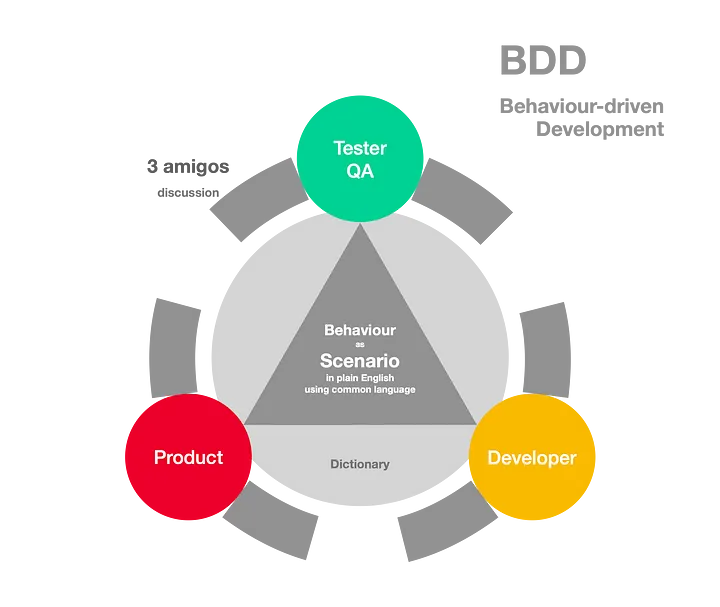

Hõlmab tarkvaratestide nimetamist, kasutades domeenikeelt koodi käitumise kirjeldamiseks.
BDD-d peetakse katsepõhise arengu (TDD) täiustamiseks. BDD ühendab TDD tehnikad ideedega domeenipõhisest disainist ning objektiivile orienteeritud analüüsist ja disainist, et pakkuda tarkvara arendus- ja juhtimismeeskondi ühiste vahendite ja ühise protsessiga tarkvaraarenduse valdkonnas.
Näide tööriistast: JBehave
| Head | Vead |
|---|---|
| Lihtsustab arendajate ja testijate koostööd | Kliendi mitte teadlikust, mis ta soovib |
| Keskendub kasutaja ootustele ja ärile | Raskused keerukate süsteemid korral |